Introduction¶
Overview¶
This documentation is intended to provide guidance to administrators of the SSDI Catalogue. It assumes familiarity with the user guidance, particularly around the creation and validation of metadata.
The administrative functionality within the catalogue is accessed via the Admin console, on the top menu when you log in with an administrator profile. Additional functionality, such as downloading catalogue-wide reports, is available from the advanced search page and also the editing dashboard.

Figure 1.1.1: SSDI catalogue main page, showing admin console link

Figure 1.1.2: SSDI catalogue admin console, for a full administrator
The level of functionality available in the admin console is dependent on the privileges of the logged in user. The above image shows the admin console for a full Administrator. This page also provides a quick “at a glance” view of the number of records available, and the numbers of datasets and services.
Searches¶
Advanced Search¶
The Advanced Search capabality in the catalogue is accessed by clicking the blue magnifying glass icon on the home page.

Figure 1.2.1: Search icon on main catalogue page
Filtering options, or search facets, are available to the left of the search results, as a series of check boxes. The results can be sorted by Title, Relevancy, Rating and Popularity, and either lowest or highest scale first.
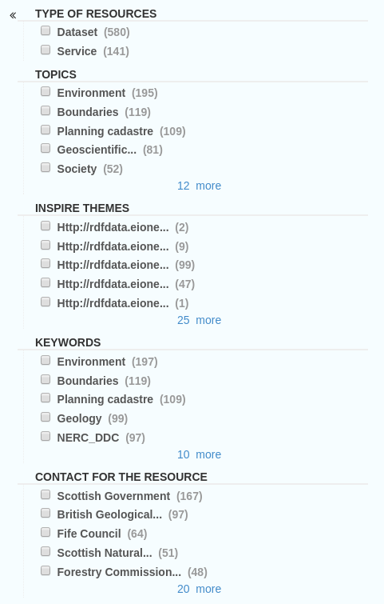
Figure 1.2.2: Search facets, or further filtering options on the search page
Further search capabilities can be accessed by clicking the “contribute” button on the main toolbar. This opens the “Editing dashboard”, where there are also options to create or import new metadata, and also view privileges for or edit existing records. This page shows different search filtering options or facets, including group, schema, validation status, workflow status and so on.
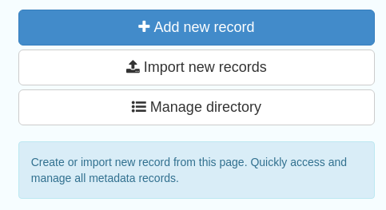
Figure 1.2.3: Options to Create or Import new data

Figure 1.2.4: Search facets available from Editing dashboard
Advanced Workflow¶
The editing dashboard can be used to perform administrative functions on individual or batch metarecords. Tools for acting on individual records are represented by icons to the right of the metadata title. The validation status of a record is indicated by the colour of it’s icon:
- Green- validated and passing checks
- Red- validated but not passing checks
- Grey- not yet validated
- White- a template or other record that should not be validated
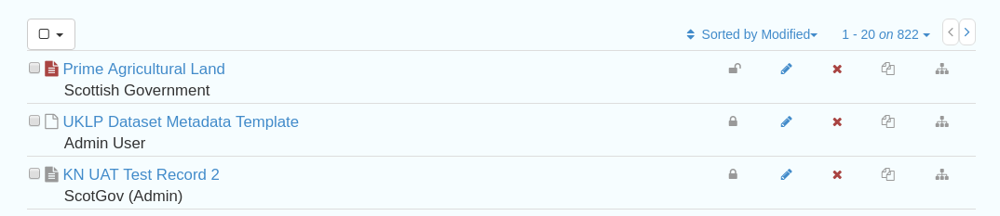
Figure 2.1.1: Administrative functions that act on individual records, accessed from the editing dashboard
In order from left to right these are:
- Privileges- set privileges on which groups can access or edit this record
- Edit- access the metadata editor for this record
- Delete this record
- Duplicate record
- Create a child record

Figure 2.1.2: Administrative functions that act on multiple records
To act on multiple metadata records, use the select function and choose the appropriate function from the dropdown list:
- Export (ZIP)- exports the records in MEF format
- Export (PDF)- exports as a combined PDF- note this will disregard any templates
- Export (CSV)- exports as a combined CSV- note this will disregard any templates
- Update privilges- note that this will UPDATE privileges rather than APPEND to existing ones
- Publish/Unpublish- add or remove the “publish” privilege from the “All” group
- Transfer Ownership
- Update categories
- Validate
- Delete
Metadata and Templates¶
The Metadata and Templates button provides access to four subsections, as shown in the image below:

Figure 2.2.1: Metadata and Templates subsections
Metadata and Templates Standards available¶
This shows the metadata standards or profiles loaded onto the system. Selecting one or more of the standards activates the options to Load templates and Load samples for the selected standards.
Note that the templates have been already loaded for iso19139.gemini22
Formatter¶
Advanced
This allows advanced administrators/system maintainers to customise how metadata is displayed within Geonetwork. For further information on this topic see the Geonetwork help documentation at http://geonetwork-opensource.org/manuals/trunk/eng/users/customizing-application/creating-custom-view.html?highlight=formatter
Schematron¶
Advanced
This section allows advanced administrators/system maintainers to see which schematron rules are in place for specific schemas and to edit them as required. It is not recommended that changes are made in this section as it will impact on how records are validated.
Metadata Identifier Templates¶
Advanced
This section allows the customisation of the identifier generated by Geonetwork when a record is created or imported. The default is a randon UUID string, but identifier templates would allow a pre-configured format with a template for rendering any user-generated elements. For example:
- scot.gov::{IDCODE} would render the IDCODE as an element to be completed during metadata creation
- scot.gov::{SLA}:{ID} would render both SLA and ID as elements to be completed during metadata creation
Harvesting¶
Harvesting allows you to consume metadata from external services on a scheduled basis. The harvester section has two subsections, as shown in the image below. It also shows any existing harvester nodes set up on the system, and their current status (running or paused).

Figure 3.1.1: Harvesting Section
Harvester Settings¶
From this section you can see the list of available harvesting nodes, and clone an existing node or add a new one.
To add a new harvester node, either clone an existing one by selecting it from the dropdown Clone list in the above image, or click the “Harvest from” button to access the dropdown list of harvester types. The configuration options available will depend on the type of node selected.

Figure 3.2.1: Common harvester node configuration options, top half of screen

Figure 3.2.2: Common harvester node configuration options, bottom half of screen
Common configuration options are:
Node name and logo: a unique name and optional logo for this harvesting node
Group: The group that the harvester should belong to
Schedule: Should the harvester run repeatedly to a schedule or just run the once
Delete: delete this harvester node and all related records
Remove records: delete records but leave harvester in place
Save: save changes to harvester configuration
Harvest: run this harvest
Category: set the category that the harvested records should be added to
- Validate records before import``: Reject invalid records before importing them into the catalogue. This has the following options``:
- Accept all metadata without validation (this option will import all records regardless of validity)
- Accept metadata that are XSD valid (this option will cause the harvest to fail on the first invalid record)
- Accept metadata that are XSD and Schematron valid (this option will cause the harvest to fail on the first invalid record)
Below the configuration options is a report on the harvester history if available, and the number of records harvested in the last harvest. Note that if the configuration changes at all these will be reset.
For information on the configuration options for the different harvester node types, see the Geonetwork documentation at http://geonetwork-opensource.org/manuals/trunk/eng/users/user-guide/harvesting/index.html
Harvester Reports¶
This section allows you to see the harvester history for all nodes and export the results as a CSV file.

Figure 3.3.1: Exporting harvest history as a CSV
Statistics and Status¶
This section provides a range of metrics and information on the health of the Geonetwork installation and the activity on it. It is split into five subsections.
Status¶
This subsection should be the first port of call if there are any problems with the Catalogue. If the catalogue is under a low load and is performing optimally then the status page should look like the one below:

Figure 4.1.1: Status page showing catalogue performing optimally
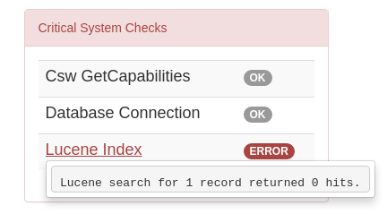
Figure 4.1.2: Status page showing error, with detailed error message accessed by clicking on red link
Report any errors shown here to Astun Technology.
The metrics links provide advanced information on the status of the system and should not generally be needed. The Activity “Export (zip)” provides a log file from the server. This may be requested by Astun Technology support staff. This download could be large and may take some time. The Thread Status link provides advanced information on the java installation, and should not generally be needed.
Search Statistics¶
This is an extensive subsection showing the following, all additionally available for export as CSV:
Search statistics, such as the number of catalogue views by day or month
Statistics for the CSW endpoint
Number of searches by timeperiod and type, shown as a graph
Types of services for which a search is triggered, such as export to MEF, RDF, keyword search in portal, shown as a Pie Chart
IP address for each search
- Search fields and terms
- This allows the choice of the type of search, which then displays the criteria used and the number of searches
- Clicking on a criteria shows the breakdown of number of searches per term for that criteria
- For example, to see a breakdown of search keywords, choose “Search” from the dropdown box and then click the “Keyword” link in the list below (see Figure 4.2.3)


Figures 4.2.1/2/3: Various elements of the search statistics interface
Content Statistics¶
This subsection provides more information on content searches. The following options are available, for export as CSV:
Catalog content statistics, such as the number of harvested records, total number of records, number of public records and so on
Metadata records popularity, showing the most popular records searched for (clicking the blue eye icon to the right of a record will take you to it)
Best Rated, showing the most highly rated records (if local star ratings are being used)
- Record statistics, this is a dropdown list with a number of available metrics, for example (but not limited to):
- Year
- Format
- INSPIRE theme(s)
- Contact for the resource

Figure 4.3.1: Catalog content statistics and Most popular records
- A number of pie charts, showing the following metrics, where hovering over a slice will provide the actual number of records:
- Category
- Owner
- Workflow Status
- Validation Status

Figure 4.3.2: Record statistics by Year
Information¶
This subsection provides information on the Geonetwork installation on the server. This section is for advanced administrator/system maintainer use.
It comprises the following sections:
- Catalog information- where the files and folders are located on the server
- Database- the connection status and connection string for connecting to the database
- System information- the version of java in use and the amount of memory being consumed
- Index- information about the configuration of the search index
Versioning¶
If metadata versioning is enabled on the server, which it is not, by default, then this section provides information about this process. This section is for advanced administrator/system maintainer use only.
Reports¶
This section contains various downloadable reports on user activity in the catalogue. Each provide the option to choose a date range, and the option to filter by group. The resulting reports are available for download as a CSV. The following reports are available:
- Updated metadata- can be used to find records that have been, or not been, updated within a specific timeframe
- Internal metadata- can be used to find records that are only available within their group
- Metadata file uploads- shows records for which data has been attached (not used within SSDI)
- Metadata file downloads- shows records for which data has been downloaded (not used within SSDI)
- Users access- shows user names, emails and last login dates

Figure 5.1.1: The reporting section
Classification Systems¶
This section provides access to the Thesauri and other directories used within the catalogue. It is split into three subsections.
Thesaurus¶
Thesauri in rdf (skos) format can be managed or added here. It is also possible to interrogate the existing thesauri loaded into the catalogue.

Figure 6.1.1: The thesaurus subsection showing the customised Scottish Regions thesaurus
Selecting a thesaurus from the list provides further information about it. The settings here should not be changed as they will affect the working of the catalogue.
It is possible to add additional thesauri by clicking the “Add thesaurus” link. The options are as follows:
- New thesaurus- build one from scratch in Geonetwork
- From local file- upload a thesaurus in rdf (skos) format from your local hard drive
- From URL- provide a link to a compatible thesaurus online
Directories¶
Directories are snippets of information that can be pre-completed and inserted into metadata records. They are derived from subtemplates that are part of metadata standards. The available subtemplates are shown as tabs across the top of the Directory subsection- for Gemini 2.2 these are Organizations and contacts and Online resources.
Selecting Organizations and contacts shows the metadata snippet for adding a Points of Contact subtemplate. To create a new record based on this template, click the “Duplicate” icon ( ) to the right of the template name.
) to the right of the template name.
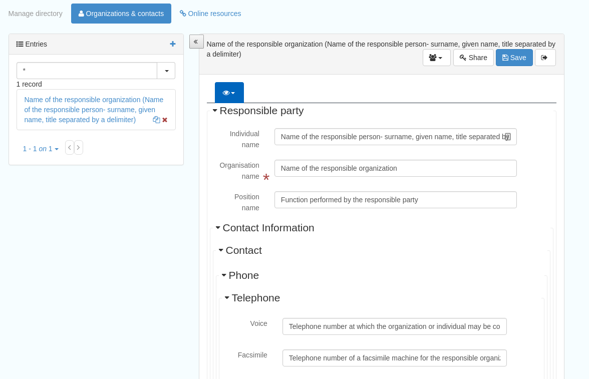
Figure 6.2.1: The Organizations and contacts interface
Along the top of the entry window are, from left to right:
- Group dropdown- which group should have ownership of this subtemplate
- Sharing settings- which groups should have visibility of this subtemplate
- Save
- Save and close
It’s also possible to change the view that is used for completing this subtemplate, from default to xml view by clicking the blue “eye” symbol ( ).
).
Once saved, the contact will be available using the “search for a contact” dialogue when creating or editng a metadata record.

Figure 6.2.2: Adding a point of contact snippet when editing a record
The dropdown box next to the contact name allows the user to choose the element where this snippet should be inserted.
Categories¶
This subsection lists the categories that records can be added to, and provides the option to add new categories or delete existing ones.

Figure 6.3.1: Category list
Selecting a category from the list brings up a dialogue where it’s display name can be edited in each of the languages enabled in the catalogue, along with the options to save changes or delete the category.
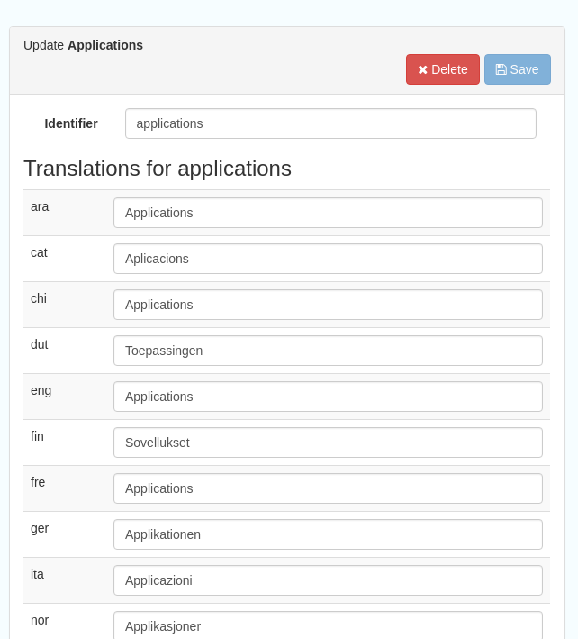
Figure 6.3.2: Selecting a category and displaying additional options
To add a new category, click the “New category” button shown in Figure 6.3.1 above. Add an unique name for the category and save it. To change it’s display name in any of the available languages, select it from the category list and edit as shown in Figure 6.3.2 above.
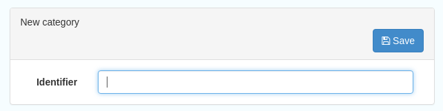
Figure 6.3.3: Adding a new category
Standards¶
This section should only be used by advanced administrators and system maintainers. It lists the metadata standards or profiles that are loaded into the installation, along with the option to remove a standard, update it, or add a new one.
When adding a new standard or updating an existing one, there are three options:
- Provide the path to the folder containing the standard on the server filesystem
- Provide the UUID of a metadata record that contains a schema archive as an attached online resource
- (Not shown in Figure 7.1.1) manually add or update the standard on the server in the schema_plugins location (found in the System Information panel) and restart the server

Figure 7.1.1: The standards interface
Users and groups¶
This section is where existing users and groups are managed, and new ones are added. There are two subsections, described below.
Manage groups¶
This subsection allows you to list and edit the existing groups in the catalogue, and add new ones. Groups are listed on the left, and selecting a group brings up additional options, shown below, with the option to save any changes or delete this group.

Figure 8.1.1: The groups list and top half of the groups editing interface
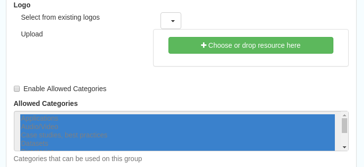
Figure 8.1.2: The middle section of the groups editing interface
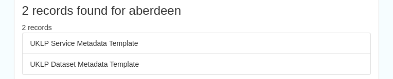
Figure 8.1.3: The lower section of the groups editing interface (intermediate section on translations for this group name not shown)
To add a new group, click the blue “New group” button below the list (not shown in figure 8.1.1). This brings up the same dialogue shown in figures 8.1.1-8.1.3.
Manage Users¶
This subsection allows you to list and edit the existing users in the catalogue, and add new ones. Users are listed on the left, and selecting a user brings up additional options, shown below, with the option to save any changes or delete this user. For exsiting users there is also the option to reset the password.
The settings for editing or creating a user are as follows:
Enable (default is yes)- allow this user to log in, or not
User name (mandatory)- the name the user should use to log in
Password (mandatory, not shown for existing users)
Name (mandatory)
Surname (mandatory)
Organisation (optional)
Address fields (optional)
Is an administrator (default is no)- if checked the user will be a full administrator for the whole catalogue with full access to all functionality for all groups
- Profiles per group- if not a full administrator then the user needs to be assigned at least one role or profile within the catalogue. Note that a user can be part of multiple groups and have different profiles per group
- Registered User: can download protected data
- Editor: has rights to create/delete/edit metadata within their group
- Reviewer: has rights to authorise publication of metadata within their own group
- User administrator: has rights to administer users, and create/delete/edit metadata within their group
Records owned by this user (if any)
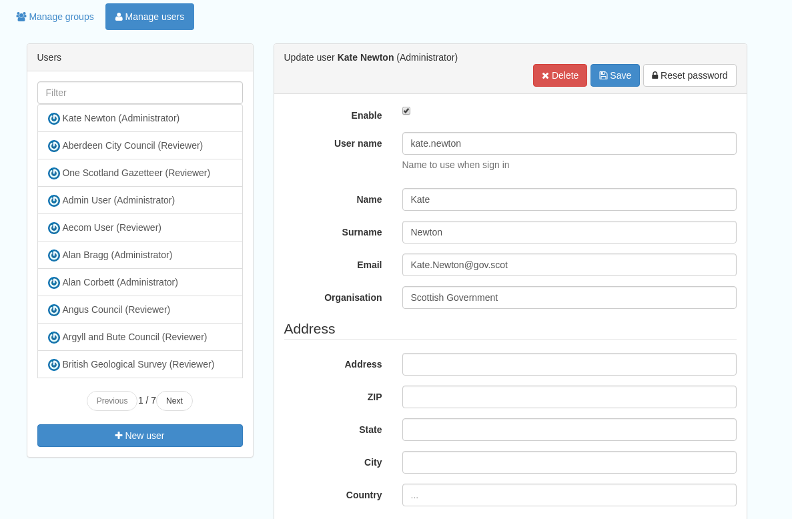
Figure 8.2.1: The users list and top section of user editing interface
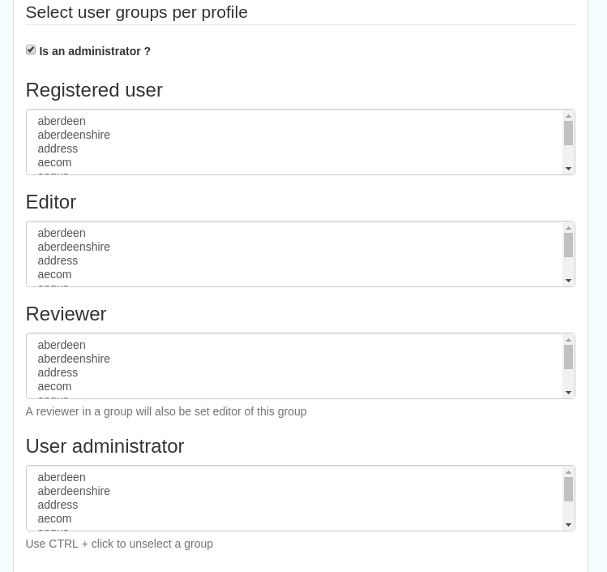
Figure 8.2.2: The middle section of the user editing interface

Figure 8.2.3: The lower section of the user editing interface
Settings¶
This section should be used only by advanced administrators and system maintainers. This section is where the main configuration of for the installation is set up. It contains a number of subsections, as described below, but in general settings should only be changed by experienced staff as they can have an adverse effect on the running of the site.
Settings¶
The settings subsection provides access to the main configuration for the installation.

Figure 9.1.1: The settings panel
The various elements are described in detail in the Geonetwork documentation at http://geonetwork-opensource.org/manuals/trunk/eng/users/administrator-guide/configuring-the-catalog/index.html so not all elements are described below, but there are some sections that may be useful:
- Log levels- there are two of these, accessed via dropdown lists. The first is at the top of the settings panel, next to the “Save settings” button. The second is in the Catalog server subsection. The default for both is “Production” and this level should only be changed if increased logging is specifically requested. In that case, change to “Dev” and save settings, but remember to set it back to “Production” for normal use!
- Catalog description- the Catalog name and Organisation are used throughout the catalogue and can be changed as required
- Organisation- this is also used throughout the catalog and can be changed as required
- Catalog- shows the version of Geonetwork in use
- Catalog server- shows the URL and protocol (http or https) being used. Changing these values will trigger a change to internal URLs within the metadata records
- Metadata Search Results- limits how many records can be selected in a single operation. Increasing this value may have a negative impact on the performance of the server
- Catalog Service for the Web (CSW)- should this be enabled (default is yes). Note that there is a known issue where the option to set a contact to be used for GetCapabilities does not work. This is being investigated, and can be set elsewhere. In general the default settings for this section should be used.
- User self-registration- if this option is set (default is no) then visitors to the catalogue can register as users (with the Registered User profile)
- User feedback- deprecated in version 3.0.0 onwards
- Search statistics- if enabled (default is yes) then Geonetwork will save statistics on searches in the database
- INSPIRE Directive configuration- this section enables INSPIRE options in the CSW response from the catalogue and enables the INSPIRE search options in the advanced search panel.
- Harvesters- allow editing on harvested records- if this is set (default is no) then records harvested from a remote location can be edited. Note that, if set, any changes would be overwritten by subsequent harvests
- Harvester- this section contains settings to alert if a harvest has succeeded or failed. It is not configured by default
- Metadata configuration- this section contains settings on which views are available, which is the default, and whether group logos should be used for records. The default values are generally sufficient
- Metadata workflow- this section includes sections on the publication of invalid metadata. If the publication of invalid metadata is disabled, it is also possible to automatically set the status of invalid records to unpublished, and to force validation when a metadata record is saved.
The remaining settings are generally only configured on installation and should only be changed by experienced administrators or system maintainers.
Logo¶
This subsection is where logos are uploaded and/or deleted, and where the main catalogue logo is set. New logos can be uploaded using the green “Choose or drop images here” button, and the current catalog logo is shown on the left. For logos that have been uploaded, there are options (icons, from left to right) to set as the catalogue logo, set as the favicon, or delete.
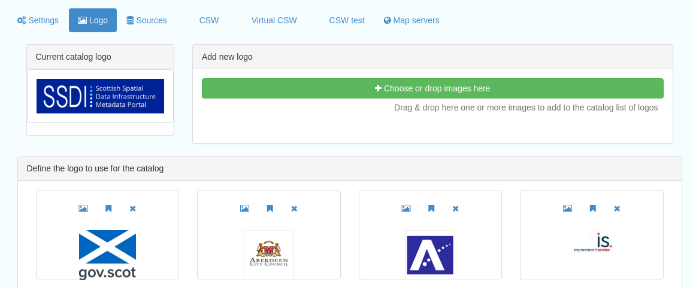
Figure 9.2.1: The logo configuration interface
Sources¶
This subsection is only used when a number of different sources are used for loading the data, such as harvesting nodes.
CSW¶
This subsection provides more detailed options for configuring the CSW service for the catalogue. In general the default options are sufficient.
The Contact setting allows the choice of a user within the catalogue to populate the contact information in the CSW GetCapabilities request. A specific user “Metadata Contact”, has been set up for this purpose.
The CSW Service information setting allows the configuration of some of the GetCapabilities elements, such as the Title, Abstract and so on. Fields are selected using a dropdown list, the language is chosen (default is English), and then the Value for the given setting can be added.
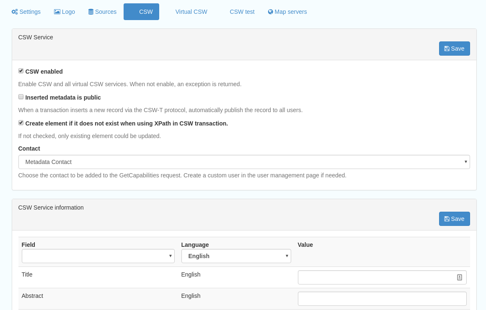
Figure 9.3.1: The CSW settings interface
Virtual CSW¶
This subsection allows the configuration of Virtual CSW endpoints. These allow for different CSW URLs to be used within the catalogue, such as for different groups or metadata categories.
To configure a new Virtual CSW endpoint, click the blue “New Virtual CSW” button and then configure the following settings:
- Name- This will be used as the URL endpoint for the virtual CSW. This must begin with csw-
- Description
- Filters/Query- the filter that should be used to decide on the records that should be published under this endpoint. Choose from the dropdown list, or use the advanced query option. The figure below shows an example endpoint for records belonging to the Aberdeen group
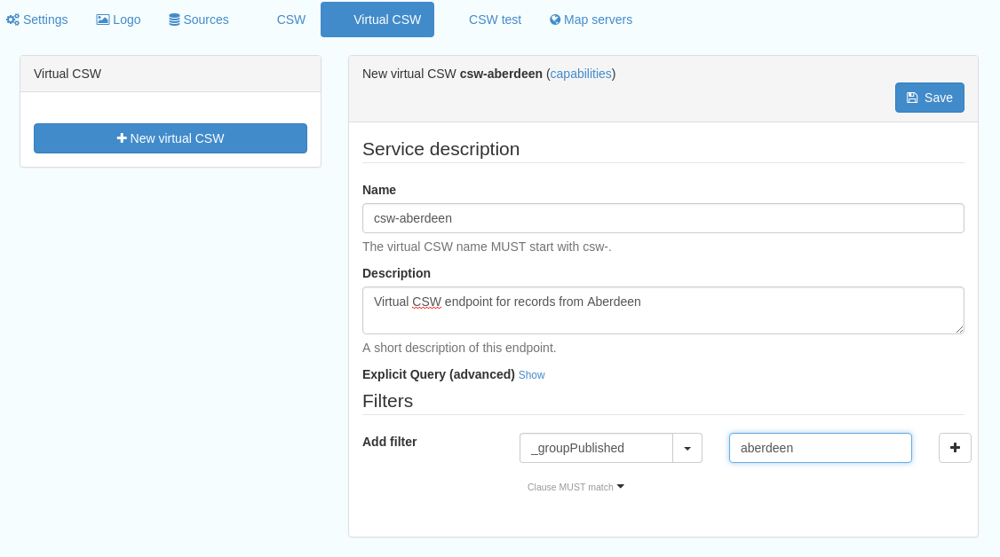
Figure 9.4.1: Virtual CSW endpoint set up for Aberdeen group
Once a virtual endpoint has been saved, it’s capabilities can be checked using the link shown in figure 9.3.1
Note that the default contact information, as configured in the CSW subsection, will be used for the GetCapabilities request
CSW test¶
This subsection allows you to test various CSW requests on the standard endpoints or any virtual endpoints configured. The endpoints are displayed as radio boxes and the available requests are accessible from a dropdown list. Where it is necessary to adjust a parameter, such as a search term or record ID, this can be done in the XML section. To run the request click the green “Send CSW request” button. The response will appear below.

Figure 9.4.2: Results of CSW “GetRecordById” request to the standard catalogue CSW endpoint, for record with ID 8fc49f46-2d6b-45b0-abd9-79e8aa2233cb
Map servers¶
This subsection allows you to set up the catalogue as an OGC publisher for WMS/WFS/WCS. In order to configure this section a Geoserver or Mapserver instance must be installed on the server. Not currently implemented in this installation.
Tools¶
This section contains some tools that can be run when maintenance is needed on the server. The subsections are as follows:
Index admin¶
In general it is not necessary to run these tools unless transferring a large number of metadata records, changing the catalogue’s appearance, or if unexpected search results are reported. The tools are as follows:
- Rebuild index- this rebuilds the lucene search index, used in all operations that perform searches on the metadata
- Optimize index- this is run nightly but can be run to re-optimise the index if odd search results are spotted
- Rebuild index configuration- rebuild the index configuration if changes have been made to the catalogue, such as to the search views
- Clear the XLink cache- if directories are added or changes have been made to the catalogue that would affect the structure of xlinks (such as to the URL or protocol), clear the cache
- Clear formatter cache- if changes have been made to the catalogue display (schematron views, or text strings), clear the cache

Figure 10.1.1: The index admin interface
Batch process¶
This subsection can be used to make xsl transformations on multiple records at once, such as to update contact information in bulk, change internal URLs or update keywords. It is wise to request a database backup before performing a batch process as there is no way to undo the transformation once it has been started.
The processes are defined per schema, and new processes can be added as required. The records that the process should be applied to can be filtered by Group, Owner, Category or custom search term, further filtered to include/exclude templates, and then selected using the dropdown selection dialog.
The available processes are accessed via a dropdown list, which then prompts you to supply the required parameters, such as the Old URL and the New URL. To run the process, click the blue “Run” button. The results of the process will be shown below. Note that the process may take a long time if there are a large number of records to search.

Figure 10.2.1: The batch processing interface, showing the configuration of the URL replacer for metadata records owned by Transport Scotland
Transfer ownership¶
This subsection allows you to change the owner (user) of a set of records. Choose the user from the dropdown list, noting that this list contains only users with profiles of editor and above.
In the “Target group and editor” list choose the group that your new editor belongs to. The “Target editor” dropdown list will then show all users with editor profile and above in that group, and additionally full administrators for the catalogue. Select the appropriate editor and then click the blue “Transfer” button.

Figure 10.3.1: The transfer ownership interface, configured for transferring records currently owned by the Fife Council user to the Admin user.
Note that changing the ownership of a record applies only to users and does not affect group privileges. This tool is also available in the Search panel as one of the available actions for selected results.
Editing online documentation¶
The source for the online documentation is written in ReStructuredText (rst) syntax and stored in a public repository on GitHub at https://github.com/AstunTechnology/ssdidocs. Every time this source documentation is updated, it is regenerated into html by ReadTheDocs and the generated version is available at http://scottish-sdi-metadata-portal.readthedocs.io/.
There are two sections to the documentation at present, represented by two separate rst files:
- User guidance https://github.com/AstunTechnology/ssdidocs/blob/master/docs/ssdi_guidance.rst
- Admin guidance https://github.com/AstunTechnology/ssdidocs/blob/master/docs/ssdi_adminguidance.rst
Editing the documentation will require a GitHub account.
ReStructured Text Syntax¶
ReStructured Text documents should be written in a text editor rather than a word processing application
A guide to syntax can be found at http://docutils.sourceforge.net/docs/user/rst/quickref.html
An online editor and previewer can be found at http://rst.ninjs.org/
Edit on github¶
The documentation can be edited online by either clicking the “Edit on GitHub” link, or navigating to the URLs given above. Note that the procedure outlined here seems complicated but in most cases it’s a button-pressing exercise.
Click the edit icon for the document you wish to edit.
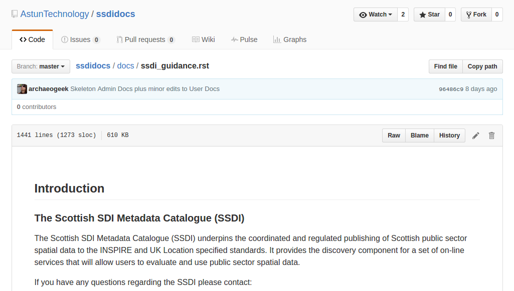
Figure 11.1.1.: Editing in GitHub
The editing interface has two tabs, one for editing and one for previewing changes. You can use shortcuts like ctrl-f to find text in the document that you wish to change. Check your changes using the preview tab, and then in the “Propose file change” section briefly outline your change.

Figure 11.1.2: Detailing your changes
Click the green “Propose change” button and then in the following window, quickly review your changes and then click the green “Create pull request” button.

Figure 11.1.3: Reviewing the pull request

Figure 11.1.4: Creating the pull request
In the following window, if necessary expand on your explanation of the changes and then click the green “Create pull request” button.
The final window provides one further opportunity to make comments about your changes, but there is no requirement to do so. An email is sent to the owner of the repository, who will review the changes you have made and accept or reject them. If the change is accepted you will be notified by email but need take no further action- the new documentation will be automatically updated and pushed to ReadTheDocs. If the change is rejected for some reason then you will be notified of the reason why and the pull request will be closed without your changes being accepted.
Note that you will not be able to add new images using this method, you’ll need to edit locally (or provide Astun with the images).
Editing locally¶
Editing the files locally requires the installation of a Git client on your local computer. Details on installation and configuring git are beyond the scope of this document, but downloads and instructions for windows can be found at https://git-for-windows.github.io/.
You will need a GitHub account to edit files locally.